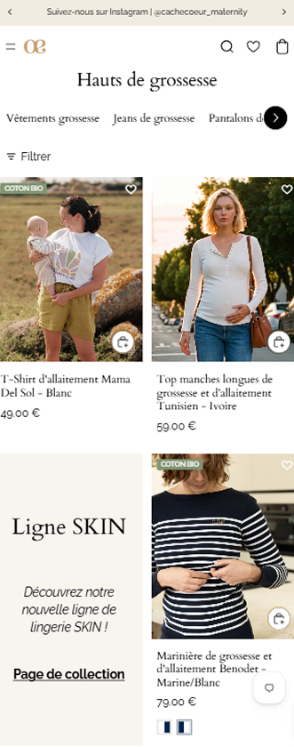
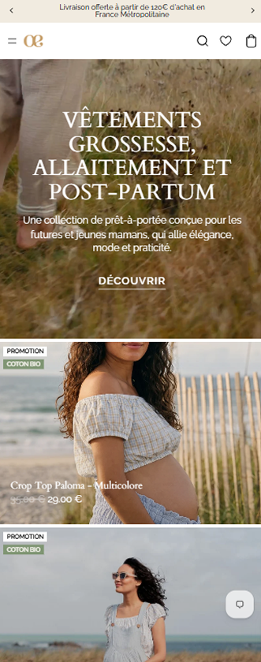
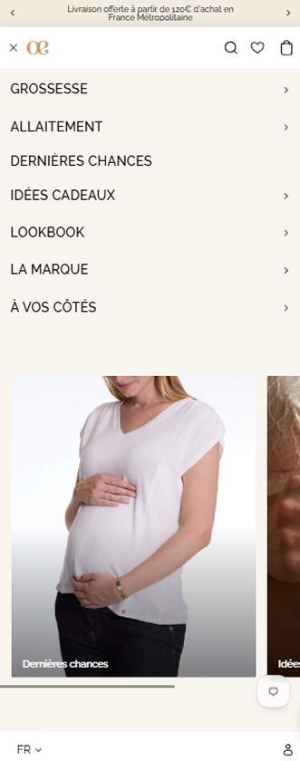
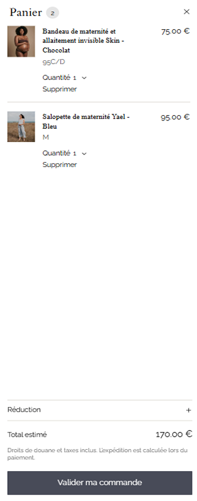

Cache Coeur
Cache Cœur est une marque française fondée en 2008 à Brest, spécialisée dans la lingerie, les maillots de bain, le homewear et les accessoires (comme les bolas) pour la grossesse et l'allaitement. Elle allie savoir-faire corsetier, haute technicité et éco-responsabilité pour offrir confort, maintien et féminité aux futures et jeunes mamans tout en s'adaptant aux évolutions de leur corps.
Voir le siteType
Site e-commerce
Rôle
UX/UI Designer • Développeuse Front-End
Outils utilisés
Figma • Liquid Shopify • JavaScript

objectifs
Moderniser l’identité visuelle
Repenser le webdesign pour offrir au site une interface plus actuelle, cohérente avec l’image de marque et plus attractive. L’objectif était de créer une identité visuelle plus forte, tout en conservant l’univers existant de la marque.
Améliorer l’expérience utilisateur
Simplifier la navigation et clarifier les différents parcours pour permettre aux utilisateurs de trouver plus facilement les informations et les produits recherchés. L’enjeu était de rendre l’expérience plus intuitive, fluide et agréable, aussi bien sur desktop que sur mobile.
Optimiser les performances
Améliorer les temps de chargement et les performances globales du site afin de proposer une expérience plus rapide et fluide. Une attention particulière a été portée à l’expérience mobile, essentielle dans le parcours d’achat.
Renforcer l’efficacité du site e-commerce
Optimiser la présentation des produits et le parcours d’achat afin de faciliter la prise de décision et limiter les points de friction. L’objectif était de rendre le parcours plus clair et efficace, tout en favorisant la conversion.

Processus
Conception et développement
J'ai participé au projet sur la conception UX/UI et le développement Front-End Shopify, de la création des interfaces sur Figma jusqu'à l'intégration d'un thème personnalisé basé sur Horizon.
Conception UX/UI
La première phase du projet a consisté à concevoir les maquettes desktop et mobile sur Figma. J'ai travaillé sur la refonte des parcours utilisateurs, du méga menu et sur la restructuration des fiches produits afin de simplifier la navigation et d'améliorer l'expérience d'achat.
Développement Front-End
- Personnalisation du thème Horizon : création de nombreuses sections personnalisées et entièrement administrables depuis l’éditeur Shopify.
- Expérience utilisateur & navigation : amélioration de la navigation entre les collections, travail sur les cartes produits, effets de hover et personnalisation du panier.
- SEO & architecture du site : optimisation du maillage interne afin de faciliter la navigation des utilisateurs.
- Optimisation de la visibilité des offres : intégration de blocs promotionnels directement dans les pages collections pour valoriser certaines offres ou catégories.




Impact
Une expérience e-commerce repensée pour faciliter la navigation et la conversion
La refonte a permis de concevoir une boutique Shopify plus performante, avec une navigation plus fluide et une meilleure conversion. Le site a été profondément personnalisé afin de répondre aux besoins spécifiques du client, tout en lui offrant davantage d'autonomie dans la gestion de ses contenus.
- Une navigation plus claire entre les collections
- Une expérience utilisateur enrichie
- Une meilleure mise en avant des produits et promotions
- Une structure plus cohérente pour le SEO

Projet suivant
Mouratoglou
Lancée en 2023 par Patrick Mouratoglou, Mouratoglou Apparel est une marque de vêtements de sport inspirée par l’univers du tennis et par l’exigence du sport de haut niveau. La marque ambitionne de dépasser les frontières du court pour proposer un vestiaire à la fois performant, élégant et accessible, pensé aussi bien pour la pratique sportive que pour le quotidien.